How to create my own skin
* all illustrations are for "iForum" WebMail skin of Pro version.
To create or modify WebMail skin, create new or modify existing style-sheet file "styles.css".
How skins are stored in WebMail:
wm_login
Login panel, where a user should enter parameters of his account (fig.1)
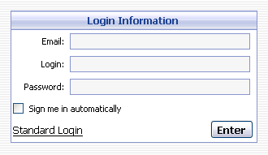
Inner styles:
Class name Description wm_input Input field of the login panel, where a user enters his account info wm_title Input fields titles of the dialog login panel. wm_login_header Dialog window caption appearance.
wm_accountslist
Main header at the top of the WebMail screen where email account information, "Settings" and "Logout" links are displayed.
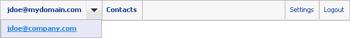
Inner styles:
Class name Description wm_accountslist_email
wm_accountslist_contacts
wm_accountslist_settings
wm_accountslist_logoutItems in accounts list wm_accountslist_selection Drop-down menu button in accounts list wm_accountslist_item Item in accounts list (in drop-down list) wm_accountslist_item_over Item highlighted (when the mouse pointer hovers over it)
wm_toolbar
Top and bottom toolbar of WebMail which contains toolbar icons.
Inner styles:
Class name Description wm_toolbar_item Toolbar item with functional buttons appearance. wm_toolbar_item_over Toolbar item with functional buttons appearance when user moves cursor over the item. wm_toolbar_item_press The style of "Move to folder" button when pressed. wm_tb_press The style of "Mark as read" and "Reply" buttons when pressed. wm_popup_menu Drop-down menu of toolbar wm_menu_item Items in drop-down menu of toolbar. wm_menu_item_over Items when targeted in drop-down menu of toolbar. wm_search_form Pop-up searching form wm_toolbar_search_item_over Searching form appearance when targeted and pressed.
wm_inbox_page_switcher
Page switcher.
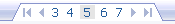
Inner styles:
Class name Description wm_inbox_page_switcher_pages All pages. wm_inbox_page_switcher_pages font Current page.
wm_mail_container
Container for a list of folders and list of messages.
wm_folders
Folders list.
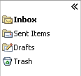
Inner styles:
Class name Description wm_folders_part Folders list container.
wm_inbox
Main list box where read, unread, selected and filtered messages are displayed.
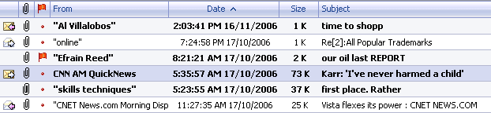
Inner styles:
Class name Description wm_inbox_headers Message list header. wm_inbox_headers_separate Stripes which delimit headers items from each other. wm_inbox_item New messages in the message list. wm_inbox_item_select New messages in the message list which are selected. wm_inbox_read_item Read messages in the message list. wm_inbox_read_item_select Read messages in the message list, which are selected. wm_inbox_deleted_item Deleted messages in the message list. wm_inbox_deleted_item_select Deleted messages in the message list, which are selected.
wm_lowtoolbar
Lower toolbar of system displayed under messages list.
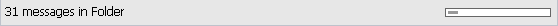
Inner styles:
Class name Description .wm_lowtoolbar_space_info .wm_progressbar A part of progress-bar which graphically indicates size of a mail box. .wm_lowtoolbar_space_info .wm_progressbar_used A part of progress-bar which indicates used space of a mail box.
wm_progressbar
The part of the progress bar showing how much of the download mail operation is already complete (at the start of download, only 0% is complete).
Inner styles:
Class name Description wm_progressbar A part of progress-bar where the progress of downloading mail will be performed. wm_progressbar_used A part of the progress bar showing how much of the download mail operation was completed (at the start of download, whole 100% is to go).
wm_message_container
Email message layout displayed in View Message and Preview Pane mode.
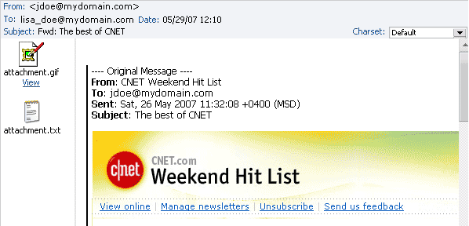
Inner styles:
Class name Description wm_view_message Message header field captions appearance such as "From", "To", "Subject" etc. in "view message" mode. wm_attachments_cell List of attachments in "view message" mode/ wm_message_cell Message body in "view message" mode. wm_message_headers Message header field captions appearance such as "From", "To", "Subject" etc. in "preview pane" mode. wm_message_attachments List of attachments in "preview pane" mode. wm_message Message body in "preview pane" mode. wm_message_body_quotation Quoted strings appearance in message body. wm_message_rfc822 Appearance of message rfc822 headers.
wm_new_message
The form of a new message creation.
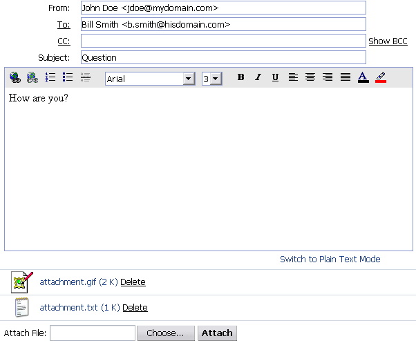
Inner styles:
Class name Description wm_attachment The list of attachments.
wm_html_editor
html-editor.
Inner styles:
Class name Description wm_html_editor_toolbar The list of available tools for text editing. wm_html_editor_cell Field of text entry. wm_color_palette Drop-down menu "color palette".
wm_contacts
The list of contacts and contact groups.
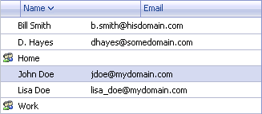
All styles in use for wm_inbox are applied here as well.
wm_contacts_view_edit
The list of settings or contact properties.
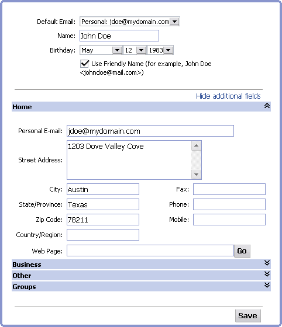
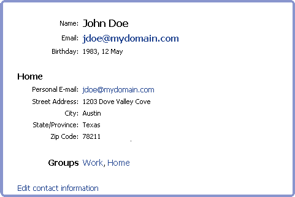
Inner styles:
Class name Description wm_contacts_card The frame embracing the contact information. wm_contacts_tab A title of contact information section in the mode of contacts editing. wm_contacts_name Titles marked with large type in view contact information mode.
The frame embracing the list of properties and contacts settings, is formed with the help of following patterns located in the folder "Skins\MySkin\contacts"
Icon file name Description top.gif Top frame bound top_left.gif Top left angle top_right.gif Top right angle right.gif Right frame bound left.gif Left frame bound bottom.gif Bottom frame bound bottom_right.gif Bottom right angle bottom_left.gif Bottom left angle
wm_settings
Mail account settings.Create "menu" folder in your own skin directory where functional button icons should exist. Name of icon files must be exactly as follows:
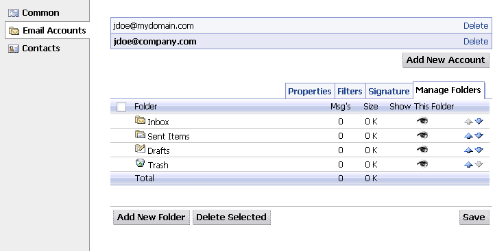
Inner styles:
Class name Description wm_settings_nav Settings navigation panel. wm_selected_settings_item Selected element at the settings navigation panel. wm_settings_cont Settings container. wm_settings_list Accounts list. wm_settings_list_select Selected account in the accounts list. wm_settings_accounts_info Area for tabs in "Email Accounts" options list. wm_settings_switcher_indent Right indent in tabs sequence. wm_settings_switcher_item Tabs in "Email Accounts" options list wm_settings_switcher_select_item Current selected tab. wm_settings_mf_headers Appearance style of the "Folder", "Msg's", "Size", "Synchronize" etc. headers in the "Manage Folders" tab. wm_settings_mf_total Totals panel positioned lower than folders list in the "Manage Folders" tab. wm_settings_manage_folders td Separating stripe in the folders list of the "Manage Folders" tab.
Create "folders" folder in your own skin directory where functional button icons should exist. Name of icon files must be exactly as follows:
Icon file name Description accounts_arrow.gif Accounts drop-down list button. accounts_arrow_down.gif Accounts drop-down list button when pressed. accounts_arrow_over.gif Accounts drop-down list button, when cursor is over it. arrow_down.gif Drop-down list indicator when the list is hidden. arrow_up.gif Drop-down list indicator when the list is hidden. attachment.gif File attached. check_mail.gif Mail checking. delete.gif Message deleting. empty_trash.gif Trash clearing. flag.gif Flag button. forward.gif Forward message import_contacts.gif Contacts importing. mark_all_read.gif Mark all messages as read. mark_all_unread.gif Mark all messages as unread. mark_as_read.gif Mark message as read mark_as_unread.gif Mark message as unread. message_down.gif Jump to next message in mailbox message_down_inactive.gif Inactive icon appearance when current message is last one in mailbox. message_up.gif Jump to previous message in mailbox. message_up_inactive.gif Inactive icon appearance when current message listed is the first in mailbox. new_contact.gif Create a new contact. new_group.gif Create a new group. new_message.gif Create a new message. order_arrow_down.gif Descending sort indicator. order_arrow_up.gif Ascending sort indicator. popup_menu_arrow.gif Drop-down menu indicator in the toolbar. print.gif Print Message priority_high.gif High Priority. priority_low.gif Low Priority. priority_normal.gif Normal Priority. purge.gif Purge Deleted Messages. reload_folders.gif Reload Folders Icon. reply.gif Reply to the Message. replyall.gif Reply to all. save.gif Save Message. search_button.gif Search button. send.gif Send Message icon. unflag.gif Unflag button.
Create "contacts" folder in your own skin directory where functional button icons should exist. Name of icon files must be exactly as follows:
Icon file name Description down.gif Folder downward movement in "Manage Folders" mode. down_inactive.gif Inactive icon of folder downward movement in Manage Folders" mode. folder.gif Default Folder icon. folder_drafts.gif Drafts icon. folder_drafts_sync.gif Synchronized draft messages folder. (Synchronized Drafts icon) folder_inbox.gif Inbox icon. folder_inbox_sync.gif Synchronized inbox messages folder.(Synchronized Inbox icon) folder_send.gif Sent Messages icon. folder_send_sync.gif (Synchronized Sent Messages icon) folder_sync.gif (Synchronized Default Folder icon) folder_trash.gif Trash icon folder_trash_sync.gif (Synchronized Trash icon) hide_folders.gif Hide Folders Window icon show_folders.gif Show Folders Window icon up.gif Folder upward movement in the "Manage Folders" mode. up_inactive.gif Inactive icon of folder upward movement in "Manage Folders" mode.
Create "settings" folder in your own skin directory where functional button icons should exist. Name of icon files must be exactly as follows:
Icon file name Description group.gif Contacts group. import.gif Contacts importing. new.gif New contact. new_group.gif New contacts group. save.gif Save contact info.
Unlike main WebMail skins, calendar skins are located in "calendar/skins" folder (not "skins"), filename of calendar styles is "calendar_styles.css" (not "styles.css").
Icon file name Description menu_accounts.gif Mail account settings icon at the settings navigation panel. menu_common.gif Common settings icon at the settings navigation panel. menu_contacts.gif Contact settings at the settings navigation panel.
main_block
Sets the main background color of calendar
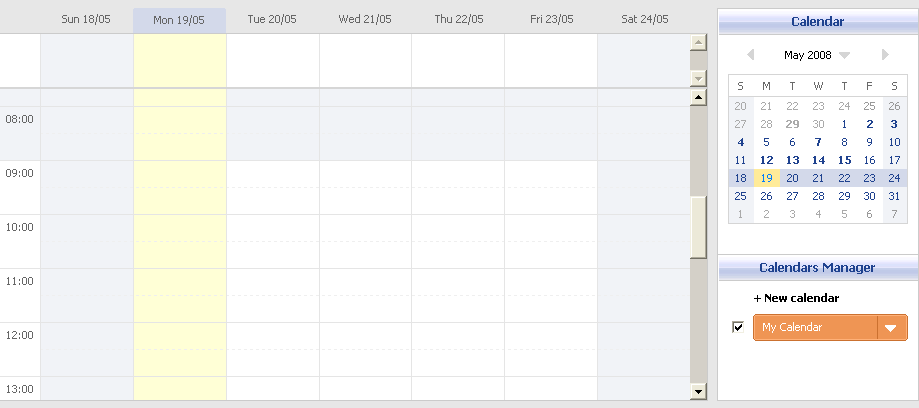
Inner styles:
Class name Description #area_1_day The look of "long" events area in "Day" view mode. #area_2_day The look of the bottom event part in "Day" view mode. #area_1_week The look of "long" events area in "Week" view mode. #area_2_week The look of the bottom event part in "Week" view mode. #area_1_month The look of events area in "Week" view mode.
right
Sets the look of small calendar and calendar manager
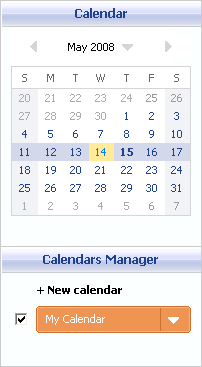
Inner styles:
Class name Description calendar_header The look of headers of small calendar and calendar manager calendar_manager The look of calendar manager area mini_calendar_box .CalLink The look of text in current month cells weekend The look of cell marked as weekend select The look of currently selected cell today The look of today's cell today a The look text in today's cell
work_area_week
Sets the look of calendar external working area in "Week" view mode.
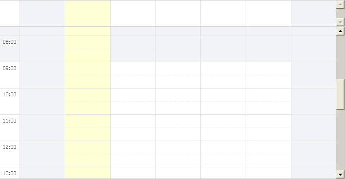
Inner styles:
Class name Description notworkday The look of lines in the main calendar area marked as non-working hours. rhead_notworkday The look of line headers marked as non-working hours. weekend_day The look of columns in the main calendar area marked as weekend. current_day The look of column of the current day.
work_area_month
Sets the look of calendar external working area in "Month" view mode.
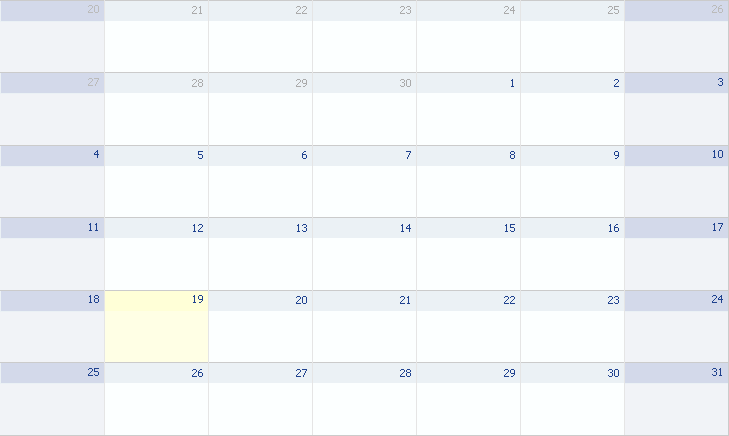
Inner styles:
Class name Description cell_weekend The look of cell marked as weekend cell_weekend .header The look of cell headers marked as weekend cell The look of other cells in "Month" view mode. cell .header The look of other cells headers in "Month" view mode. cell .header_inactiv The look of cells headers of months neighboring with the current.
time_tabs_outer
Class of inactive tabs for switching calendar view mode (day/week/month)
Inner styles:
Class name Description time_tabs_outer div Additional class of inactive tabs for switching calendar view mode (day/week/month)
time_tabs_outer_activ
Class of active tabs for switching calendar view mode (day/week/month)
Inner styles:
Class name Description time_tabs_outer_activ div Additional class of active tabs for switching calendar view mode (day/week/month)
toolbar_interval_switch
Class of calendar toolbar
Inner styles:
Class name Description #time_title_1, #time_title_2, #time_title_3 Class determining the look of text of timeframe switcher. calendar_arrow_left Class determining the look of the button for moving the time frame to the left calendar_arrow_right Class determining the look of the button for moving the time frame to the right
day_headers_inner_today
Sets the look of column header of the current day in the main calendar working area
Inner styles:
Class name Description day_headers_inner_today div Adds roundness for column header of the current day.
If you have any questions don't hesitate to email to support@afterlogic.com
Or visit our support web page at http://www.afterlogic.com/support
or web forum at http://www.afterlogic.com/forum